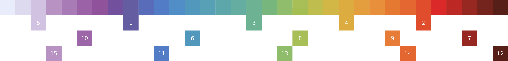

Unified argument values¶
marker_style¶
The marker_style argument is currently unified across
all plots with Matplotlib and Plotly
that use markers to represent data values.
List of accepted formats¶
- Explicit name
- Example:
"circle"
- Example:
- Shortcut symbol
- Example:
"o"
- Example:
List of accepted values¶
"o","circle"".","point","dot""t","3","triangle""s","4","square""p","5","pentagon""h","6","hexagon""8","octagon""*","star""+","plus""x","cross""d","diamond""-","_","horizontal_line""|","vertical_line""^","triangle_up""v","triangle_down""<","triangle_left"">","triangle_right"
Exception: 3D plots in Plotly accept only a reduced list of values:
"o","circle""s","4","square""+","plus""x","cross""d","diamond"
line_style¶
The line_style argument is currently unified across
all plots with Matplotlib and Plotly
that use lines to represent data values.
List of accepted formats¶
- Explicit name
- Example:
"solid"
- Example:
- Shortcut symbol
- Example:
"-"
- Example:
List of accepted values¶
"solid","-""dash","--""dashdot","-.",".-""dot",".",":",".."
colormap¶
The colormap argument is currently unified across
all plots with Matplotlib and Plotly
that use a color spectrum to represent numerical data values.
References¶
- Built-in colormaps
- External colormaps that are provided in this package
- Other resources, with some focus on color vision deficiencies
- Containing at least one concrete colormap suggestion
- Journal articles
- Nuñez et al.: Optimizing colormaps with consideration for color vision deficiency to enable accurate interpretation of scientific data where “Cividis” was derived from “Viridis”, accompanying Python library cmaputil.
- Wong: Points of view: Color blindness (see CUD below)
- Blog articles
- Tol: Colour schemes and templates
- Okabe, Ito: Color Universal Design (CUD)
- Krzywinski: Color Palettes for Color Blindness
- Nichols: Coloring for Colorblindness
- Luk: Tips for designing scientific figures for color blind readers
- Brewer et al.: Colorbrewer 2.0
- Google AI blog: Turbo, An Improved Rainbow Colormap for Visualization
- Kenneth Moreland: Color advice
- Journal articles
- Guidance on designing new colormaps
- Journal articles - Stauffer et al.: Somewhere Over the Rainbow: How to Make Effective Use of Colors in Meteorological Visualizations and the online tool hclwizard
- Other
- Simulation of color vision deficiencies
- Containing at least one concrete colormap suggestion
color¶
The color argument is currently unified across
all plots with Matplotlib and Plotly
that use discrete colors to represent data values or entire vectors.
List of accepted formats¶
- Named color
- List of accepted values: Named colors
- Examples:
"g","darkseagreen","tab.green","xkcd.algae_green"
- Hexadecimal triplet
- Needs to start with
#being followed by 6 hexadecimal digits (0-9andA-F). Letters can be given in lower or upper case. - Examples:
"#CC7030","#00ff00"
- Needs to start with
- Shorthand hexadecimal triplet
- Needs to start with
#being followed by 3 hexadecimal digits (0-9andA-F). Each digits is doubled automatically, thereby expanding to the 6 digits form. Letters can be given in lower or upper case. - Example:
"#0f0"which is equivalent to"#00ff00"
- Needs to start with
- RGB
- Can be either a string of the form
"rgb(number, number, number)"or a tuple of the form(number, number, number)where number is either an integer from0 to 255or a float from0.0 to 1.0(gets internally multiplied by 255 and casted to integer). - Examples: String
"rgb(51, 51, 255)", tuple(51, 51, 255)or equivalently string"rgb(0.2, 0.2, 1.0)"and tuple(0.2, 0.2, 1.0)
- Can be either a string of the form
- RGBA
- Can be either a string of the form
"rgba(number, number, number, number)"or a tuple of the form(number, number, number, number). The first three numbers can be either an integer from0 to 255or a float from0.0 to 1.0. The fourth number needs to be a float from0.0 to 1.0. - Examples: String
"rgba(0, 255, 0, 0.3)"or the equivalent tuple(0, 255, 0, 0.3)
- Can be either a string of the form
List of default colors¶
The default colors were chosen in order to be distinguishable by people with different color vision deficiencies (CVD) and also to work when plots are converted into grayscale as it may happen in print:
- “#6059a0”
- “#df4828”
- “#69b190”
- “#ddaa3c”
- “#d1c1e1”
- “#4e96bc”
- “#95211b”
- “#a6be54”
- “#e67932”
- “#9b62a7”
- “#4e79c5”
- “#521a13”
- “#8cbc68”
- “#e4632d”
- “#b58fc2”
These colors were selected from Figure 19 of Paul Tol’s colour schemes and templates by checking that the first 6-7 colors are easily distinguishable with different color vision deficiencies as simulated with Coblis.
{kind=link}
Example: A scatter plot that uses colors 1 to 6 to demonstrate their approximate appearance for people with different CVD. Regarding the content of the plot, it uses a logarithmic y scale to visualize the exponential growth of confirmed COVID-19 cases in countries of central europe during February and March 2020.
{kind=link}
{kind=link}
{kind=link}
{kind=link}
{kind=link}
{kind=link}
{kind=link}
References¶
- Wikipedia
- Matplotlib
- xkcd